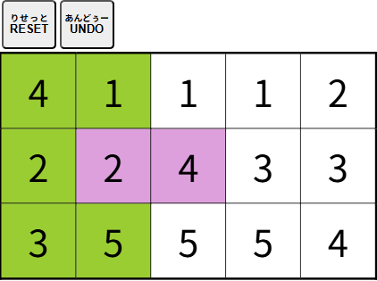

【グルーピング】
すべてのマスを１～５の
数字
すうじ
がひとつずつ
入
はい
ったグループ（
同
おな
じ
色
いろ
）に
分
わ
けましょう。

・マスをクリック（タップ）すると
色
いろ
が
付
つ
きます。
・
同
おな
じグループ（
同
おな
じ
色
いろ
）の１～５の
数字
すうじ
は、マス
同士
どうし
が
隣
とな
り
合
あ
っていなければなりません。
・
黒
くろ
いマスは
選択
せんたく
できません。
・[
RESET
りせっと
]ボタンをクリック（タップ）すると
最初
さいしょ
からやり
直
なお
す
事
こと
ができます。
・[
UNDO
あんどぅ
]ボタンをクリック（タップ）するとひとつ
前
まえ
の
状態
じょうたい
に
戻
もど
す
事
こと
ができます。
閉
と
じる